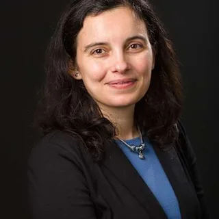

Reviewed: 2026-05-23
November 24, 2026 expansion: researcher contributions, recent findings, and registry status. The older directory below remains a May snapshot, not a fresh verification of every clinician's affiliation or referral availability.
This brief supports clinician-to-clinician discussion and second-opinion planning for PFIC4/TJP2-associated cholestasis. It is not a ranked hospital list. It separates public evidence signals from inference because PFIC4-specific patient volumes are rarely public.
Scope: this packet is primarily about confirmed PFIC4/TJP2. Broader PFIC and genetic-cholestasis center signals are included only when they help identify programs likely to evaluate a PFIC4/TJP2 case.
Related files:
- Layperson specialist guide / HTML
- Clinician PFIC4 brief / HTML
- Treatment escalation clinician brief / HTML
- Clinician TJP2 gene brief / HTML
- Combined packet / HTML
- Source index / HTML
Selection framework
Public evidence was weighted in this order:
- Direct PFIC or genetic cholestasis clinical/research program.
- PFIC4/TJP2 publication, disease modeling, variant interpretation, or original discovery role.
- PFIC trial participation or registry/network role: MARCH-PFIC, PEDFIC, LOGIC/ChiLDReN, NAPPED, TreatFIC, PFIC Network advisory/scientific work.
- Pediatric hepatology, advanced/transplant hepatology, biliary diversion or hepatobiliary surgery, nutrition, genetics, and HCC-surveillance capacity.
- Accessible second-opinion or consultation path.
Highest-signal centers to evaluate
| Logo | Center | Main location | Public evidence | PFIC4-specific read |
|---|---|---|---|---|
| Cincinnati Children's Undiagnosed and Rare Liver Disease Center / PFIC Research Center | Cincinnati, Ohio, United States | Publicly describes a PFIC-focused integrated care/research center, a PFIC clinic goal, registry, translational research, clinical trials, 1,447-gene hereditary liver panel, variant-validation pipeline, iPSC-derived hepatocytes, liver organoids, zebrafish, and mouse models. Team includes Akihiro Asai, William Balistreri, Chunyue Yin; ChiLDReN lists Alexander Miethke as Cincinnati site PI. MARCH-PFIC included Cincinnati as a U.S. site. | Strong U.S. signal for PFIC genetic diagnosis, translational modeling, clinical trials, and transplant integration. Good fit for TJP2 variant review and treatment-strategy second opinion. | |
| King's College Hospital / King's College London Institute of Liver Studies | London, England, United Kingdom | Original TJP2/PFIC4 discovery group includes King's investigators Richard Thompson, Melissa Sambrotta, Sandra Strautnieks, A.S. Knisely, and colleagues. KCL Liver Molecular Genetics is tied to clinical hepatology and multidisciplinary management. King's is listed in PFIC Network directory and as a MARCH-PFIC U.K. site. | Strong signal for TJP2 genetics, molecular hepatology, histopathology/genotype-phenotype interpretation, and pediatric-to-adult rare liver disease expertise. | |
| UMC Groningen / Beatrix Children's Hospital | Groningen, Netherlands | Henkjan Verkade initiated NAPPED with Bettina Hansen in 2017 and TreatFIC in 2022/2023. PFIC Network materials describe familial cholestatic syndrome, enterohepatic circulation, transplant, prognosis, and treatment-response work. PFIC Network directory lists UMC Groningen, including a research-network-marked surgical entry. | Strong PFIC outcomes/natural-history signal; useful for questions about bile-acid response, native-liver survival, biliary diversion, transplant, and TreatFIC-era medication outcomes. | |
| Bicetre Hospital / AP-HP Paris-Saclay / Filfoie CRAVB-CG | Le Kremlin-Bicetre / Paris area, France | Filfoie describes Bicetre as France's coordinating reference center for biliary atresia and genetic cholestasis, with pediatric hepatology/transplant, surgery, imaging, endoscopy, PICU/anesthesia, pathology, biochemistry, toxicology, virology, and molecular biology. Emmanuel Gonzales coordinates the French rare pediatric liver disease network and coauthored PFIC diagnosis/treatment opinion work. | Strong European genetic cholestasis reference-center signal. Useful for PFIC4/TJP2 multidisciplinary review and escalation planning. | |
| Children's Hospital Colorado / University of Colorado | Aurora, Colorado, United States | PFIC Network directory entry; Ronald Sokol chairs PFIC Network Scientific Medical Advisory Board and has longstanding pediatric cholestasis leadership. ChiLDReN lists Children's Colorado with Sokol as network chair/site PI and Michael Narkewicz as site PI. Children's Colorado has a public PFIC/Pediatric Liver Center signal. | Strong U.S. pediatric cholestasis, nutrition, transplant, and research-network signal; useful for monitoring architecture and HCC-surveillance discussion. | |
| Texas Children's Hospital / Baylor College of Medicine | Houston, Texas, United States | PFIC Network advisory-board role for Benjamin Shneider; BCM profile emphasizes intestinal bile-acid transport, intrahepatic cholestasis mechanisms, and clinical pediatric cholestasis studies. ChiLDReN lists Texas Children's as a site. PFIC Network 2023 materials describe Paula Hertel as caring for PFIC and participating in ChiLDReN PFIC analysis/publication work. | Strong bile-acid biology and pediatric cholestasis/transplant infrastructure signal; relevant to IBAT-response framing and clinical management. | |
| UPMC Children's Hospital of Pittsburgh | Pittsburgh, Pennsylvania, United States | PFIC Network advisory-board role for James Squires; ChiLDReN site; Squires is advanced/transplant hepatology and Starzl Network clinical lead. Patrick McKiernan directs hepatology and has public inherited metabolic liver disease and PEDFIC 1 PI evidence. | Strong transplant hepatology, PFIC medication trial, and rare pediatric liver disease network signal. | |
| SickKids / University of Toronto | Toronto, Ontario, Canada | PFIC Network directory and ChiLDReN site; Binita Kamath and Simon Ling were in the original TJP2/PFIC4 discovery author group and are ChiLDReN listed investigators. | Strong pediatric hepatology and original TJP2 discovery signal; useful for pediatric second opinions and transition planning. | |
| UCSF / UCSF Benioff Children's Hospital | San Francisco, California, United States | PFIC Network directory and ChiLDReN site; Laura Bull is a PFIC Network advisory-board member, original TJP2/PFIC4 discovery author, and genetic cholestasis researcher. Philip Rosenthal is listed as UCSF ChiLDReN site PI. | Strong liver genetics and pediatric hepatology signal; use for genotype interpretation or research-oriented second opinion. | |
| No single logo | CHLA, CHOP, Seattle Children's, Riley/Indiana, Lurie Chicago, Children's Healthcare of Atlanta, Primary Children's/Utah, SLU/Cardinal Glennon | Los Angeles, Philadelphia, Seattle, Indianapolis, Chicago, Atlanta, Salt Lake City, and St. Louis, United States | PFIC Network asterisked entries indicate participation in a PFIC-specialized research network. Many are ChiLDReN sites. MARCH-PFIC also lists several trial sites internationally and in the U.S. | Reasonable regional tertiary options. Verify current PFIC4/TJP2 case experience, transplant capacity, and registry/trial access. |
| Mayo Clinic Pediatric Liver Clinic | Rochester, Minnesota, United States | Public clinic page lists familial intrahepatic cholestasis conditions, advanced hepatology/transplant certification, multidisciplinary pediatric liver care, living-donor transplant capability, and transition to adult congenital liver disease care. | Good general pediatric liver/transplant signal; PFIC-specific public evidence appears less direct than the PFIC-dedicated programs above. |
Named experts and evidence signal
| Photo | Name | Affiliation | Main location | Evidence signal |
|---|---|---|---|---|
 |
Richard J. Thompson | King's College London / KCH | London, England, United Kingdom | Original TJP2/PFIC4 discovery senior author; liver molecular genetics lead; PFIC Network advisory board; MARCH-PFIC author; PFIC genetics educator. |
 |
Laura N. Bull | UCSF | San Francisco, California, United States | Original TJP2/PFIC4 discovery author; PFIC Network advisory board; pediatric and pregnancy-related cholestasis genetics. |
| Ronald J. Sokol | Children's Hospital Colorado | Aurora, Colorado, United States | PFIC Network scientific-medical advisory board chair; ChiLDReN leadership; original TJP2 discovery author; longstanding pediatric cholestasis research. | |
 |
Henkjan J. Verkade | UMC Groningen | Groningen, Netherlands | NAPPED and TreatFIC initiator; major PFIC natural-history, genotype, bile-acid, biliary-diversion, and transplant outcome work. |
 |
Bettina Hansen | Toronto/Erasmus context in NAPPED/TreatFIC | Toronto, Canada / Rotterdam, Netherlands research context | NAPPED/TreatFIC outcomes-methodology collaborator. |
 |
Akihiro Asai | Cincinnati Children's | Cincinnati, Ohio, United States | PFIC disease modeling with iPSC-derived hepatocytes and preclinical platforms; TJP2 deficiency model publication involvement; PFIC future-treatment educator. |
 |
Chunyue Yin | Cincinnati Children's | Cincinnati, Ohio, United States | Liver biology, cholestasis, and molecular genetics; Cincinnati rare liver disease center team. |
 |
Alexander G. Miethke | Cincinnati Children's | Cincinnati, Ohio, United States | ChiLDReN Cincinnati site PI; liver transplant medical director; pediatric genetic liver disease/fibrosis biomarker research. |
| No local headshot found | Emmanuel Gonzales | Bicetre / Paris-Saclay | Le Kremlin-Bicetre / Paris area, France | Pediatric hepatologist; French rare pediatric liver disease network coordinator; PFIC diagnosis/treatment opinion author. |
| No local headshot found | Emmanuel Jacquemin | Bicetre / Paris-Saclay | Le Kremlin-Bicetre / Paris area, France | Senior pediatric hepatology/transplant leader in French genetic cholestasis reference center. |
 |
Benjamin L. Shneider | Texas Children's / Baylor | Houston, Texas, United States | PFIC Network advisory board; ChiLDReN site PI; bile-acid transport/intrahepatic cholestasis researcher; pediatric hepatology leader. |
 |
Paula Hertel | Texas Children's / Baylor | Houston, Texas, United States | PFIC clinician-researcher; ChiLDReN PFIC analysis/publication involvement; PFIC Network treatment educator. |
| No local headshot found | James E. Squires | UPMC Children's | Pittsburgh, Pennsylvania, United States | PFIC Network advisory board; pediatric transplant hepatologist; ChiLDReN co-investigator; Starzl Network clinical lead. |
| No local headshot found | Patrick J. McKiernan | UPMC Children's | Pittsburgh, Pennsylvania, United States | Director of hepatology; inherited metabolic liver disease/transplant; PEDFIC 1 PI record. |
| Binita M. Kamath | SickKids / University of Toronto | Toronto, Ontario, Canada | Original TJP2 discovery author; ChiLDReN site PI; pediatric hepatology/rare cholestasis. | |
| No local headshot found | Simon Ling | SickKids / University of Toronto | Toronto, Ontario, Canada | Original TJP2 discovery author; ChiLDReN site PI; pediatric hepatology. |
 |
Silvia Vilarinho | Yale | New Haven, Connecticut, United States | PFIC Network advisory board; adult PFIC education; liver genomics and unexplained liver disease. |
| No local headshot found | Gitta Lubke | PFIC Network | PFIC Network / remote registry role | Science advisor for PFIC registry and patient-centered research infrastructure. |
 |
Antonia Felzen | UMC Groningen | Groningen, Netherlands | NAPPED researcher and TreatFIC co-founder; PFIC natural history in medication era. |
 |
Pasquale Piccolo | TIGEM | Pozzuoli, Italy | PFIC Network 2024 small-grant awardee for PFIC3 genome editing; relevant to root-cause PFIC therapy direction, not PFIC4-specific. |
Recent research summary
| Area | Current read |
|---|---|
| PFIC4/TJP2 phenotype | Published evidence continues to support marked heterogeneity. The 2025 missense-variant report describes multiple affected children across consanguineous families with low-GGT cholestasis and variable course; it emphasizes WES-based diagnosis and close monitoring. |
| Mechanism | PFIC4 remains framed as tight-junction/barrier dysfunction rather than a primary canalicular pump defect. TJP2 deficiency can disrupt CLDN1 localization/canalicular tight-junction integrity and permit bile-acid reflux/leakage. |
| IBAT inhibitors | MARCH-PFIC provides randomized all-PFIC evidence for maralixibat and included TJP2/PFIC4 in the supplemental/all-PFIC cohort. PFIC4 n is small. Odevixibat has PFIC labeling and strong PFIC1/PFIC2 randomized evidence, with broader-genotype/open-label support. Recent reviews suggest PFIC4 may be biologically well suited to IBAT response when bile acids reach the intestine, but this remains small-number evidence. |
| Natural history/outcomes | NAPPED and TreatFIC remain central for PFIC outcome modeling, especially genotype-severity, serum bile-acid response, native-liver survival, biliary diversion, and transplant questions. Much of the strongest quantified evidence is PFIC1/PFIC2, not PFIC4. |
| Guidelines | EASL 2024 genetic cholestasis guidelines and GeneReviews support genetic testing, specialist referral, nutrition/vitamin care, pruritus management, surveillance, and transplant escalation. PFIC4-specific recommendations remain limited by case counts. |
| HCC surveillance | TJP2/PFIC4 has published HCC reports. GeneReviews flags HCC surveillance for PFIC4; exact interval and whether to screen all PFIC4 patients from infancy vs risk-stratify by fibrosis/cirrhosis should be center-specific. |
| Patient-centered research | PFIC Network's IMPACT/PATH work is moving toward patient-centered comparative effectiveness research, including medications, surgeries, nutrition, mental-health/itch support, financial burden, access delays, sleep, skin, school, caregiver quality of life, and real-world outcomes. |
| Root-cause therapies | Direct TJP2 preclinical work includes a 2025 mRNA patent application with cell experiments. No human TJP2 replacement trial was identified in the November 2026 registry search. See the research update; a patent does not establish clinical efficacy. |
Suggested second-opinion packet
- Genetic report with transcript, variant nomenclature, zygosity, classification, parental testing, and any reanalysis history.
- Baseline and longitudinal serum bile acids, total/direct bilirubin, AST/ALT, GGT, INR, albumin, platelets, CBC, AFP.
- Growth, nutrition, fat-soluble vitamins A/D/E/K, INR/vitamin K response, bone health if available.
- Medication trials: UDCA, rifampin, bile-acid binders, also called bile-acid sequestrants, such as cholestyramine, colesevelam, and colestipol, naltrexone/sertraline/hydroxyzine/other itch agents, maralixibat/odevixibat dose and response, adverse effects, diarrhea/dehydration.
- Pruritus/sleep metrics: ItchRO or local scale, excoriations, sleep disruption, school/daytime function.
- Imaging: ultrasound, spleen size/portal hypertension markers, elastography/FibroScan, MRI/MRCP if available.
- Pathology and immunostaining if biopsy was done; include outside slide review status.
- Local questions: IBAT strategy, biliary diversion candidacy, HCC surveillance interval, transplant triggers, study/registry options, and transition-to-adult plan if relevant.
Sources used
- PFIC Network Global PFIC Hospital Directory: https://www.pfic.org/pfic-hospital-directory/
- PFIC Network Scientific Medical Advisory Board: https://www.pfic.org/about-pfic-network/pfic-medical-advisory-board/
- Cincinnati Children's Undiagnosed and Rare Liver Disease Center/team/programs: https://www.cincinnatichildrens.org/research/divisions/u/undiagnosed-rare-liver-disease
- King's College London Liver Molecular Genetics and Pediatric Hepatology/Rare Diseases: https://www.kcl.ac.uk/research/liver-molecular-genetics
- ChiLDReN participating centers and NIDDK ChiLDReN overview: https://childrennetwork.org/About-The-Network/Participating-Centers
- Filfoie rare liver disease expert centers: https://en.filfoie.com/rare-liver-diseases-expert-centers/
- MARCH-PFIC trial and ClinicalTrials.gov record: https://pubmed.ncbi.nlm.nih.gov/38723644/ and https://clinicaltrials.gov/study/NCT03905330
- Pediatric cholestatic diseases in the era of IBAT inhibitors, 2026: https://www.mdpi.com/2036-7503/18/1/19
- Genotypes and clinical variants in PFIC review: https://pmc.ncbi.nlm.nih.gov/articles/PMC11846186/
- PFIC4 missense variant and phenotypic variability, 2025: https://www.nature.com/articles/s10038-025-01338-w
- PFIC Network Project IMPACT/PATH: https://www.pfic.org/project-impact/
Unresolved questions
- Current center-by-center PFIC4/TJP2 patient volume is not public.
- Current availability of remote second opinions needs direct confirmation.
- The best HCC surveillance interval for a specific PFIC4 patient remains a treating-center decision based on fibrosis/cirrhosis, AFP/imaging history, genotype, and family context.